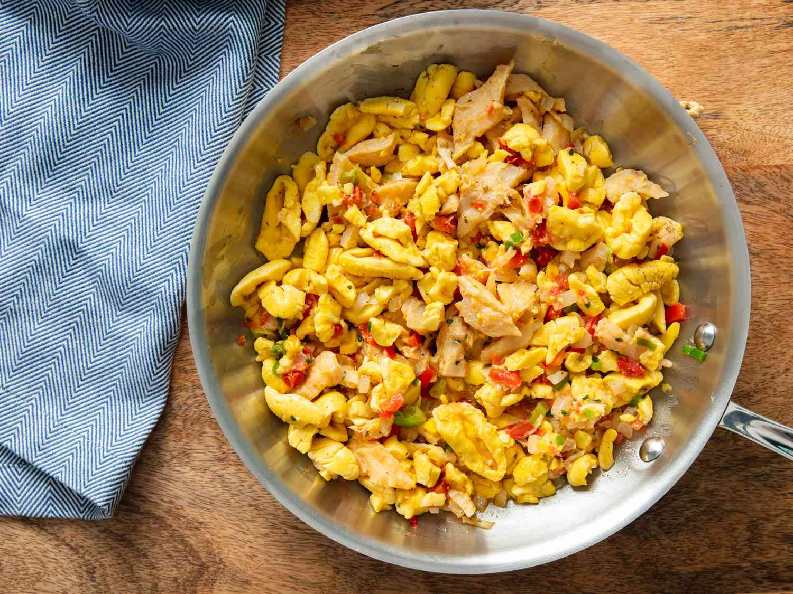

Ackee and Salted Fish
Jamaica's National Dish.

Description
Picture a vibrant platter of ackee and saltfish, where the creamy yellow ackee melds seamlessly with the tender, flaky saltfish.
The aroma of sautéed onions, bell peppers, and thyme fills the air, hinting at the rich, savory flavors within. Each bite is a
harmonious blend of the ackee's subtle, buttery texture and the saltfish's bold, briny taste, perfectly complemented by the
colorful medley of vegetables and spices.
Ingredients
- 1 can of ackee (or fresh ackee, if available and properly prepared)
- 1/2 pound saltfish (salted cod)
- 1 medium onion, sliced
- 2-3 scallions (green onions), chopped
- 1 bell pepper (red, green, or yellow), chopped
- 1-2 tomatoes, chopped
- 1-2 cloves garlic, minced
- 1 scotch bonnet pepper, finely chopped (optional, for heat)
- 1 teaspoon fresh thyme
- Salt and black pepper, to taste
- 2-3 tablespoons vegetable oil or coconut oil
Steps
-
Rinse the saltfish to remove excess salt. Soak in water overnight, changing the water a few times.
Boil the saltfish in fresh water for about 15-20 minutes, then drain and flake into bite-sized pieces.
-
If using fresh ackee, ensure it is properly cleaned and boiled until tender. If using canned ackee, drain and rinse gently to avoid breaking the delicate pieces.
-
Heat the oil in a large skillet over medium heat. Add the onion, scallions, bell pepper, tomatoes, garlic, and scotch
bonnet pepper (if using). Sauté until the vegetables are softened and fragrant.
-
Add the flaked saltfish to the skillet and stir to combine with the vegetables. Cook for a few minutes, allowing the flavors
to meld. Gently fold in the ackee, being careful not to mash it. Season with thyme, black pepper, and any additional optional
seasonings. Cook until heated through.
-
Garnish with fresh parsley if desired. Serve hot with traditional sides such as fried dumplings, boiled green bananas,
or breadfruit.